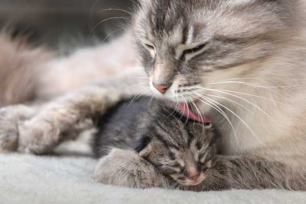

We understand your pets are a big part of your family. We are here for you every step of the way when it comes to your pet's health. Our vast library is consistently updated with helpful articles, case studies and information on pet medication relevant to you and your pet.
Alternative Therapies
Behavior Counseling - Complementary Medication
This is a broad topic that includes a variety of therapeutic options including herbal remedies, homeopathic remedies, nutraceuticals and supplements. There are few controlled studies to show that any of these treatments are effective in pets.
Antioxidants
An antioxidant is any compound, whether vitamin, mineral, nutraceutical, or herb that protects against cellular damage from reactive oxygen species, including free radicals, single oxygen atoms and hydrogen peroxide. Some of the more well-known antioxidants include ascorbic acid (Vitamin C), alpha-tocopherol (Vitamin E), beta-carotene, and enzymes such as catalase, superoxide dismutase and glutathione peroxidase.
Black and Green Tea
Tea is second only to water as the most popular beverage in the world. Both black and green teas are made from the tea plant, Camellia sinensis.
Behavior
Behavior Counseling Aggression - Introduction
Aggression is defined as threats or harmful actions directed toward another individual and can include threat displays, lunging, growling, snarling, snapping and biting. In animals, aggressive behaviors are a means of communication.
Behavior Management Products for Dogs
There are numerous products on the market that have been designed to help prevent undesirable behavior in dogs. Leashes, harnesses, and head halters are needed to keep pets under control, especially when outdoors.
Introduction to Desensitization and Counterconditioning
Counterconditioning and desensitization are powerful ways to change behavior. They are usually used in combination. Desensitization provides a means of safely exposing the pet to the stimulus at a level at or below which fear is likely to be exhibited.
Breeding

Breeding and Queening Cats
Breeding, pregnancy, and birthing in cats may seem simple, but can have complications. Cats can have multiple litters in a year. It is important to know when your cat may be expecting to give birth so that you can be available to provide assistance if necessary. It is important to know what signs indicate that your cat may be experiencing difficulties delivering the kittens and know when veterinary attention is needed.
Caesarean Sections in Cats - Post Operative Instructions
A caesarean section or C-section is major surgery performed to remove kittens from the uterus. This is most commonly performed as an emergency procedure when there is difficulty with natural birth. Most cats recover quickly from this procedure. Most cats have fully recovered from anesthesia by the time they are discharged to go home.
Pregnancy and Parturition in Cats
Full term pregnancy in cats is usually between 63 and 65 days during which time energy requirements increase to 1.5 times normal. Labor takes place in 3 stages: 1) nesting behavior and comfort seeking are seen, and the cat may stop eating within 24 hours of birth; 2) active stage of labor where contractions may be seen, and kittens are produced. Kittens are usually born within 1 hour of each other; however, there is cause for concern if active unproductive straining is seen for more than 20 minutes; and 3) fetal membranes are passed after the delivery of each kitten. If a kitten is not responsive, attempts can be made to suction the back of its mouth to remove as many fluids as possible while vigorously rubbing their body to stimulate respiration and applying gentle puffs of air into its mouth. Kittens need to be kept warm after birth and the mother should be watched carefully for any signs of illness.
Characteristics
Do Dogs See Color?
Knowing how and what your dog can see will help you make good choices for her. For example, you should keep your dog’s color range in mind when shopping for toys. She will enjoy yellow and blue toys more than red ones. And you’ll understand why she gets distracted during a game of fetch as she hones in on a bird flying 50 yards away. You’ll also know that to get her complete attention, you should stand directly in front of her where her range of visual acuity is greatest. And the next time you are lucky enough to be graced with a rainbow in the sky, rest assured that your dog can enjoy it, too. She will not see ALL the colors of the rainbow, but she may see a bit of yellow and blue. And that will be just fine for her!
Do Dogs Recognize Facial Expressions?
As most pet owners acknowledge, our dogs recognize our facial expressions. A frown tells a pup something is amiss and a smile makes his tail wag. Now, there is scientific evidence to validate our observations.
Do Cats See Color?
Cats are not completely color blind as they can see yellow and blue as well as shades of grey. Their eye structure does allow them to see better in dim light compared to people. Near-sightedness is common among cats.
Care & Wellness
Giving Pills to Cats
Giving pills to cats can be a challenge even for the most experienced veterinarian! The easiest way to give your cat a pill is to hide the pill in food. Soft treats are also available that can be used to hide the pill by molding the treat around it (e.g., Pill Pockets™). If your cat persists in spitting out the pills or if dietary restrictions prevent you from hiding the pills in an appealing food or treat, you will need to administer the pill directly into the cat's mouth. Following pilling your cat, give her some positive reinforcement (e.g., treats, brushing, petting or playing).
Giving Injections to Cats
Certain medical conditions can be controlled by the use of drugs that are only available in an injectable format. In many cases, cat owners are willing and able to administer these medications at home. Most cats do not seem to mind routine injections which are given in the subcutaneous tissue. This handout provides step by step instructions. Dispose of the used needles and syringes properly.
Applying Eye Drops to Cats
The proper administration of eye medication is critical in helping your cat quickly recover from an eye injury or infection. Gently clean away any debris around your cat's eyes with warm water and a washcloth. Hold the bottle using the thumb and index finger of your dominant hand with the tip pointed downwards. Use the last two fingers of the same hand to pull back the upper eyelid. Place your remaining fingers under the cat's jaw to support the head. The lower eyelid will act as a pouch to receive the drops. DO NOT touch the eye's surface with the applicator. Aiming for the center of the eye, squeeze the desired number of drops onto the eyeball.
Diagnosis
Testing and Monitoring in Addison's Disease
Addison’s disease or hypoadrenocorticism results from decreased corticosteroid and mineralocorticoid production from the adrenal glands. This results in non-specific signs of illness that mimic many other diseases. Laboratory changes consistent with Addison’s disease include anemia, absence of a stress leukogram (in a sick/stressed pet), hypoglycemia, elevated potassium, and low sodium causing a low sodium:potassium ratio, elevated kidney values and high urine specific gravity. Although an elevated resting blood cortisol level can rule out Addison’s disease, an ACTH stimulation test is needed to diagnose Addison’s disease. This requires a resting blood cortisol sample, administration of synthetic ACTH and a blood cortisol level 1-2 hours later to assess the adrenal response to ACTH. Consistently low levels of cortisol despite ACTH stimulation confirm the diagnosis. Primary Addison’s and secondary/atypical Addison’s can be differentiated by assessing the amount of endogenous ACTH in the blood.
Antibody Titers
Antibody titers are sometimes needed to diagnose disease. Antibody titers reflect the level of antibody that the pet has made in response to exposure to a certain infectious organism. The titer is generated by sequentially diluting the serum and testing it against the organism in question. The more dilute the serum when it stops producing a positive reaction, the higher the concentration of antibodies present in the blood. Titers give support to a diagnosis allowing more targeted treatment and more specific prognostic information as well as identifying zoonotic disease.
Bile Acid Test
Bile acids are made in the liver, released into the intestine to help digest fat, and are reabsorbed into the bloodstream. They can be measured in the blood to determine if the liver is working properly. Indications for the test include elevated liver enzymes, seizures, poor growth, and low blood albumin. The test is usually performed after a 12 hour fast and consists of the measurement of serum bile acids before and 2 hours after a meal. The test can be affected by poor intestinal motility – either from disease, sedation/anesthesia, or if the pet has had part of the intestine removed that is responsible for absorption of bile acids. Bile acids will be high if the liver is not functioning properly. It does not rule out liver disease as disease can affect part of the liver without significantly affecting bile acid production. Elevated bile acids may warrant further diagnostics or monitoring depending on your pet’s condition.
Emergency Situations
Acute Kidney Failure in Cats
Acute renal failure (ARF) or acute kidney failure refers to the sudden failure of the kidneys to perform normal filtration duties. ARF leads to accumulation of toxins and other metabolic wastes in the bloodstream, dehydration, electrolyte imbalances, and disturbances in the acid-base balance of the blood. The initial prognosis is guarded for all cases of ARF. If the cause is an infection, there is a better prognosis than if the cause is a toxic substance.
Bladder Stones in Cats
Bladder stones are rock-like formations of minerals that develop in the urinary bladder. All stones form because of disease or inflammation in the bladder. The most common signs of bladder stones in the cat are blood in the urine and straining to urinate. Large stones may act almost like a valve, causing an "on-off" or partial obstruction at the neck of the bladder. In males, small stones become lodged in the urethra and cause an obstruction. X-rays (with or without contrast dyes) or ultrasound may be necessary for diagnosis. The fastest way to remove bladder stones is via a surgical procedure called a cystotomy. Special diets or passing a catheter may be successful for some bladder stones. Your veterinarian will advise you of the best course of action for your cat’s particular situation.
Caesarean Sections in Cats - Post Operative Instructions
A caesarean section or C-section is major surgery performed to remove kittens from the uterus. This is most commonly performed as an emergency procedure when there is difficulty with natural birth. Most cats recover quickly from this procedure. Most cats have fully recovered from anesthesia by the time they are discharged to go home.
Medical Conditions
Anemia in Cats
Anemia is a medical term referring to a reduced number of circulating red blood cells, hemoglobin, or both. It is not a specific disease but rather it is the result of some other disease process or condition. The most easily observed and common clinical sign of anemia is a loss of the normal pink color of the gums. Several tests are performed on blood samples to diagnose anemia. If your cat's anemia is so severe that it is life threatening, a blood transfusion will be needed.
Allergies in Cats
One of the most common medical conditions affecting cats is allergy. Flea allergy, food allergies, atopy, and contact allergies are examples of allergies in cats, with flea allergy being the most common cause. Flea allergy is a response to proteins or antigens present in the flea's saliva, and just one fleabite may cause such intense itching that the cat may severely scratch or chew itself, leading to the removal of large amounts of hair. Food allergy testing is conducted by feeding an elimination or hypoallergenic diet. If your cat's symptoms improve after the food trial, a presumptive diagnosis of food allergy is made.
Asthma and Bronchitis in Cats
Asthma or chronic bronchitis is a condition where the lower airways of cats become narrow and produce excess mucus in response to a noxious stimulus such as cigarette smoke, dust, or fragrances. The most common clinical sign is coughing. A diagnosis is made through a combination of chest radiographs, heartworm testing, bloodwork, urine and fecal testing, and may also require bronchoscopy or airway lavage. As asthma cannot be cured, treatment is aimed at management of the disease using a combination of steroids and bronchodilators, usually given by inhalation to avoid or reduce negative systemic side effects. Adjunct treatments include modifying the environment to reduce exposure to the noxious stimulus, hypoallergenic diet trials, and acupuncture.
Medications
Buspirone in Cats
Buspirone is a human antidepressant drug. It has been shown to be effective in a significant number of cats with elimination (urination or defecation) disorders such as inappropriate urination, especially urine marking and other behavior problems.
Bilberry
Bilberry is an over the counter supplement given by mouth, and is used off label to treat conditions of the eyes, heart and blood vessels, diabetes, and tumors. Give as directed by your veterinarian. There are no known side effects, but information is limited. There are no known contraindications. Certain medications should be used with caution in combination with bilberry. If a negative reaction occurs, please call your veterinary office.
Carnitine
Carnitine is an amino acid nutrient given by mouth and is used to treat dilated cardiomyopathy and other heart diseases in dogs, or to treat hepatic lipidosis (liver disease) in cats. Give as directed by your veterinarian. Side effects are uncommon but may include mild diarrhea or vomiting. Do not use the D form of carnitine, use the L (Levo-) form only. If a negative reaction occurs, please call your veterinary office.
Nutrition
Esophagostomy Tube Feeding in Cats
Esophagostomy tubes are placed through the skin of the neck into the esophagus to enable ongoing nutrition in cats that either refuse to eat or are unable to chew and swallow food. A diet will be recommended by your veterinarian but must be liquefied with water before it can pass through the tube. Step-by-step instructions are provided. The decision to remove the tube will be determined by your veterinarian.
Nutrition - General Feeding Guidelines for Cats
Cats are obligate carnivores and cannot be vegetarian. Through evolution, cats have become dependent on the specific forms of nutrients found only in animal tissue. Feeding your cat a proper diet is one of the most important aspects to help keep them at optimal health. It is important to keep in mind that the nutritional requirements and dietary preferences change over the course of the cat's lifetime. Your veterinary health care team can help you make good-quality diet choices and determine the correct number of calories your cat needs in a day.
Gastrostomy Tube Feeding in Cats
Gastrostomy tubes are placed percutaneously through the skin directly into the stomach and may be needed for cats who are unable to chew or swallow their food, or for cats with diseases causing anorexia. Special liquid diets or canned diets blended with water are recommended to be given in multiple feedings throughout the day, dependent on the cat’s reason for the tube. Instructions are provided by your veterinarian for tube feeding and tube maintenance. The tube can be removed as early as 14 days after placement once the cat is eating well. Your veterinarian will remove the tube.
Parasites
Coccidiosis in Cats
Coccidiosis is an intestinal tract infection caused by a one-celled organism or protozoa called coccidia. Coccidia are microscopic parasites that live within the cells that line the intestine. Many cats that are infected with coccidia do not have diarrhea or any other clinical signs. When the oocysts are found in the stool of a cat without diarrhea, they are generally considered a transient, insignificant finding. However, in kittens and debilitated adult cats, coccidiosis can cause severe, watery diarrhea, dehydration, abdominal distress, and vomiting. Kittens are commonly diagnosed with coccidiosis. The most common drug used to treat coccidiosis is a sulfa-class antibiotic, sulfadimethoxine. Cats are frequently reinfected from the environment, so disinfection is important.
Cuterebra or Warbles in Cats
Cuterebra is the genus or scientific family name of the North American rabbit or rodent botfly. Twenty-six species of Cuterebra are known to occur in the United States and Canada. Cuterebra larvae develop within the tissues of certain animal hosts, and during this phase of their life cycle, they are commonly referred to as 'warbles'.
Ear Mites in Cats and Dogs
The ear mite is a surface mite that lives on cats, dogs, rabbits, and ferrets. It is usually found in the ear canal but it can also live on the skin surface. Mites are barely visible to the naked eye. Clinical signs of infestation vary in severity and may include ear irritation, leading to scratching at the ears or head shaking, dark waxy or crusty discharge from the ear, areas of hair loss resulting from self-trauma, a crusted rash around or in the ear, and an aural hematoma. Your veterinarian will advise you about which insecticidal products are suitable. Your veterinarian may want to re-examine your pet to ensure that the mites have been eliminated after the initial treatment has been performed.
Puppies
Housetraining for Puppies and Dogs
By using positive reinforcement, consistency, and good supervision it is simple to housetrain most dogs. Start housetraining right away, or even before you bring home a new puppy or dog. Most puppies will pause activity, sniff, and sometimes circle before squatting or posturing to eliminate. Other puppies may act generally restless and agitated when they have a full bladder or bowel. Watch closely for these signs, so you can help your puppy be successful. The goals of housetraining are to have your dog eliminate in the right areas, eliminate immediately when asked, communicate the need to eliminate, eliminate on or off leash, and when you are near a person, and hold bladder and bowels when inside/not in the elimination area. This handout describes easy to follow instructions to help housetrain your puppy. If your previously well housetrained dog begins making mistakes, always consult your veterinarian for guidance.
Fading Puppy Syndrome in Dogs
Fading puppy syndrome describes puppies that decline in health and die within about two weeks of birth. Neonatal puppies are fragile and so there can be many causes of this syndrome including birth defects, inadequate care from the mother, poor health status of the mother and/or infectious diseases. As well as addressing a specific cause, treatment focuses on maintaining hydration and warmth while providing adequate nutrition. Environmental hygiene is extremely important.
Caring for Orphaned Puppies
Raising orphan puppies requires great care, time, and vigilance. Puppies must be kept at appropriate temperatures and humidity levels. Hypoglycemia can develop quickly if they are not ingesting food regularly. Orphaned puppies need to be fed appropriate amounts of a commercial puppy milk replacer at regular intervals and can be fed by bottle or feeding tube. After each feeding the puppies will need to be stimulated to urinate and defecate. Around 4 weeks, puppies can start the weaning process onto puppy food by mixing puppy food with the commercial milk replacer to make a gruel-type food. Orphaned puppies need to be dewormed every 2 weeks starting at 2 weeks of age and should start their vaccination series no later than 6 weeks. A veterinarian should be consulted early and frequently throughout the first 6-8 weeks of life.